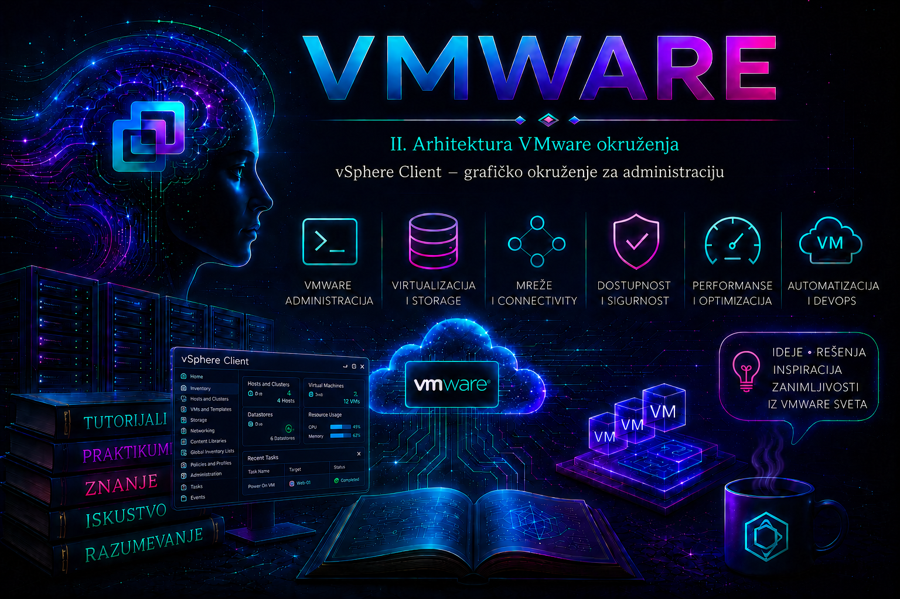

VMware

vSphere Client je centralno HTML5 administrativno okruženje vCenter Servera. Kroz njega administrator vidi inventar, odnose između objekata, efektivne dozvole, zadatke, događaje, alarme, performanse i konfiguraciju infrastrukture. Njegova vrednost nije samo u tome što administraciju pretvara u skup grafičkih postupaka: interfejs okuplja podatke više vCenter servisa i prikazuje ih u kontekstu izabranog objekta, pa administrator može da utvrdi gde se problem nalazi, ko je pokrenuo promenu, šta je promenjeno i da li je operacija završena uspešno.
Važno je precizno razlikovati dva web klijenta. Adresa vCenter Servera otvara vSphere Client, iz kojeg se upravlja centralnim inventarom i funkcijama kao što su klasteri, vMotion, distribuirani svičevi, politike skladištenja, Content Library i centralni RBAC. Direktna adresa ESXi hosta otvara VMware Host Client, namenjen lokalnom upravljanju samo tim hostom. Host Client je dragocen u laboratoriji, tokom inicijalnog priključivanja hosta i kao kontrolisani put oporavka kada vCenter nije dostupan, ali nije zamena za centralnu administraciju.
Verzijski i terminološki kontekst
Stari Windows program vSphere Client, poznat i kao C# Client, pripada istorijskim izdanjima i više se ne koristi u podržanim savremenim okruženjima. Flash zasnovani vSphere Web Client takođe je povučen. U vSphere 7 i 8 administrativni klijent je HTML5 aplikacija u okviru vCenter Server Appliance-a; od vSphere 7 VCSA je jedini oblik vCenter implementacije. Nazivi pojedinih menija i položaj kartica mogu se razlikovati između update izdanja, instaliranih plug-inova i licenci, ali koncepti inventara, kontekstnih akcija, kartica Summary, Monitor, Configure i Permissions ostaju stabilni.
U aktuelnom Broadcom portfoliju dokumentacija i paketi mogu koristiti naziv VMware Cloud Foundation, dok se u samom proizvodu i administrativnoj praksi i dalje sreću vCenter Server, ESXi, vSphere Client i PowerCLI. Funkcija koja je vidljiva u interfejsu nije automatski dostupna: izvršenje zavisi od verzije vCenter-a i ESXi hosta, kompatibilnosti, dodeljene licence, privilegija prijavljenog identiteta i stanja zavisnih servisa. Zasivljena opcija zato nije dovoljan dokaz kvara klijenta.
Pristup, identitet i bezbedna administratorska stanica
vSphere Client se otvara preko HTTPS-a na potpuno kvalifikovanom DNS imenu vCenter Servera. Produkciona praksa je korišćenje FQDN-a koji odgovara sertifikatu, pouzdanog internog ili javnog CA lanca, pouzdanog DNS-a i vremenski usklađenih sistema. Pristup IP adresom može izazvati upozorenje o nepodudarnosti imena u sertifikatu i ne treba ga pretvarati u redovnu praksu. Tipične adrese su:
https://vcsa01.lab.example/ui
https://esx01.lab.example/uiPrva adresa otvara vSphere Client, a druga VMware Host Client. Port 443 mora biti dostupan sa administratorske mreže, ali vCenter ne treba izlagati internetu. Pristup se ograničava segmentacijom, firewall pravilima, VPN-om ili privilegovanim administratorskim pristupnim okruženjem. Pregledač mora podržavati aktuelne TLS mehanizme; ekstenzije koje menjaju sadržaj stranice, agresivni proxy cache i zastarela lokalna DNS rezolucija mogu izazvati probleme koji liče na kvar vCenter-a.
Za svakodnevni rad koristi se imenovani nalog iz odgovarajućeg identity source-a i uloga sa najmanjim potrebnim skupom privilegija. Ugrađeni SSO administrator i VCSA root nisu svakodnevni administratorski identiteti: prvi je nalog visokih privilegija za upravljanje SSO domenom, a drugi je appliance OS nalog koji se ne koristi za prijavu u vSphere Client. Deljeni nalozi slabe audit trag, otežavaju istragu incidenta i povećavaju posledice kompromitacije.
Kako je organizovan radni prostor
Početni ekran objedinjuje globalni meni, izbor inventarskog pogleda, pretragu, izabrani objekat, kartice sa detaljima, kontekstni meni i panel sa skorašnjim zadacima. Najbrži rad ne nastaje pamćenjem položaja svake komande, već razumevanjem obrasca: najpre se bira odgovarajući pogled, zatim objekat, potom kartica koja predstavlja željenu vrstu dokaza ili konfiguracije.
| Element | Namena | Administratorsko pitanje |
|---|---|---|
| Globalni meni | Inventari, politike, Content Libraries, Lifecycle Manager i administracija | U kom funkcionalnom domenu radim? |
| Inventory tree | Hijerarhijski kontekst i izbor objekta | Koji je tačan objekat i šta će naslediti promenu? |
| Summary | Identitet, stanje, kapacitet, povezani resursi i aktivna upozorenja | Da li je objekat zdrav i da li sam izabrala pravi cilj? |
| Monitor | Issues and Alarms, Tasks and Events, Performance i logički prikazi zdravlja | Koji dokaz objašnjava simptom i kada je nastao? |
| Configure | Postavke izabranog objekta | Koja konfiguracija upravlja ponašanjem? |
| Permissions | Direktne i nasleđene dozvole | Ko može šta da uradi nad ovim objektom? |
| Recent Tasks | Brz pregled asinhronih operacija | Da li je promena završena, čeka, traje ili je pala? |
| Global Search | Pronalaženje vidljivih inventarskih objekata | Gde se objekat nalazi u inventaru? |
Inventarski pogledi i hijerarhija objekata
Isti resurs može se posmatrati iz više uglova. Hosts and Clusters naglašava računarske resurse i hijerarhiju vCenter–datacenter–cluster–host–resource pool–VM. VMs and Templates organizuje virtuelne mašine i šablone u foldere. Storage prikazuje datacentre, datastore objekte i datastore klastere, dok Networking prikazuje standardne ili distribuirane mrežne objekte u meri u kojoj pripadaju centralnom inventaru. Izbor pogleda menja organizaciju prikaza, ali ne stvara kopiju objekta.
| Objekat | Uloga u inventaru | Tipične zavisnosti i rizik pogrešnog obima |
|---|---|---|
| vCenter Server | Koren upravljačkog inventara | Dozvola sa propagacijom može obuhvatiti veliki deo okruženja |
| Datacenter | Logički kontejner za compute, mrežu i storage | Nije fizička lokacija sama po sebi; pogrešno premeštanje menja inventarski kontekst |
| Cluster | Grupa hostova kojom upravljaju zajedničke funkcije | Promene HA, DRS ili image politike mogu uticati na sve članove i zavise od licence |
| ESXi host | Hipervizor i fizički compute resurs | Maintenance Mode, mreža i storage utiču na sve VM-ove na hostu |
| Resource Pool | Logička raspodela compute resursa | Shares, reservations i limits imaju smisla u odnosu na sibling objekte i raspoloživ kapacitet |
| Virtual Machine | Virtuelni računar sa konfiguracijom i runtime stanjem | Power, disk, mreža, snapshot i guest operacije imaju različite privilegije i posledice |
| Datastore | Logički prikaz skladišnog prostora | Popunjenost, latencija i dostupnost utiču na više VM-ova i hostova |
| Network / Port Group | Mrežna povezanost VM ili VMkernel saobraćaja | Pogrešan VLAN ili uplink može prekinuti produkciju ili management pristup |
| Content Library | Centralna distribucija šablona, ISO i drugih stavki | Sinhronizacija, pravo pristupa i kapacitet backing storage-a određuju dostupnost sadržaja |
| Tag i kategorija | Metapodaci za klasifikaciju i automatizaciju | Ne menjaju fizički položaj objekta, ali mogu pokretati politike i spoljne automatizacije |
Inventar nije isto što i fizička topologija. Datacenter i folder su organizacioni kontejneri; cluster predstavlja upravljačku celinu; datastore može poticati sa lokalnog uređaja, SAN-a, NAS-a, vSAN-a ili drugog podržanog sistema; port grupa je logički priključak mrežne politike. Administrator zato pre akcije proverava karticu Summary, putanju objekta i povezane resurse, umesto da zaključuje samo iz naziva.
Kontekst objekta i najvažnije kartice
Summary je početna kontrolna tačka. Tu se proveravaju naziv, trenutno stanje, parent objekat, host na kojem VM radi, mreže, datastore-i, VMware Tools status, kapacitet i aktivni alarmi. Monitor daje vremenski kontekst kroz performanse, događaje, zadatke i alarme. Configure sadrži željeno ili aktivno podešavanje, ali sama vrednost ne dokazuje da je promena bez posledica. Permissions prikazuje ko ima pristup i odakle se dozvola nasleđuje. Kartice kao što su Updates, Policies ili Snapshots pojavljuju se samo kod odgovarajućih objekata i komponenti.
Kontekstni meni desnog klika i meni Actions uglavnom nude isti skup operacija, filtriran prema tipu objekta, stanju, licenci i privilegijama. Opcija može nedostajati zato što je izabran pogrešan objekat, VM je u neodgovarajućem power stanju, već postoji konfliktni task, host je disconnected, funkcija nije licencirana ili korisnik nema potrebnu privilegiju. Pre eskalacije problema treba proveriti svaki od tih uslova.
Upravljanje virtuelnim mašinama bez gubitka konteksta
vSphere Client omogućava kreiranje, kloniranje, migraciju, promenu virtuelnog hardvera, upravljanje napajanjem, povezivanje ISO sadržaja, snapshot operacije, otvaranje konzole i pregled performansi VM-a. Međutim, akcije sličnog naziva nemaju iste posledice. Power Off prekida izvršavanje kao fizičko isključenje napajanja; Shut Down Guest OS zahteva funkcionalan VMware Tools i pokreće uredno gašenje operativnog sistema; Reset je grub restart; Restart Guest OS je guest operacija. U produkciji se pre power akcije potvrđuju vlasnik servisa, maintenance prozor, stanje backup-a i uticaj na zavisne aplikacije.
Snapshot čuva stanje virtuelnih diskova kroz delta lanac i opciono memoriju; nije backup i ne treba ga koristiti kao dugoročnu zaštitu podataka. Konzola omogućava out-of-band pristup prikazu VM-a kada guest mreža ne radi, ali svaki konzolni pristup nosi mogućnost presretanja osetljivog sadržaja i direktnog unosa. Za svakodnevnu administraciju guest sistema koriste se njegov mrežni i identitetski mehanizam, dok se vSphere konzola rezerviše za instalaciju, boot dijagnostiku i opravdan oporavak. VMware Remote Console može imati mogućnosti koje browser konzola nema, ali zahteva zasebnu, kontrolisanu instalaciju.
Zadaci, događaji i alarmi: tri različite vrste dokaza
Task predstavlja operaciju koja ima stanje kao što su queued, running, success ili error. Event je vremenski zapis da se nešto dogodilo, sa korisnikom, objektom i opisom. Alarm procenjuje uslov ili događaj prema definiciji i održava stanje upozorenja dok se uslov ne normalizuje ili alarm ne potvrdi i resetuje na odgovarajući način. Te tri evidencije se dopunjuju, ali nisu međusobno zamenljive.
| Dokaz | Šta potvrđuje | Šta ne potvrđuje samostalno |
|---|---|---|
| Recent Tasks / Tasks | Tok i rezultat administrativne operacije | Da je aplikacija unutar VM-a zdrava posle uspešne vSphere operacije |
| Events | Vreme, aktera, objekat i zabeleženu promenu ili simptom | Trenutno stanje ako se ono naknadno promenilo |
| Triggered Alarms | Aktivan uslov koji je prešao prag ili događaj koji je okinuo alarm | Osnovni uzrok bez korelacije sa metrikama i promenama |
| Performance Charts | Ponašanje metrike kroz vreme | Ko je izvršio promenu ili da li je uzrok u guest aplikaciji |
| Logovi | Detaljan tok komponente i karakterističnu grešku | Širi poslovni uticaj bez inventarskog i vremenskog konteksta |
Recent Tasks je praktičan kratki pregled, ali nije kompletna istorija. Za istragu se otvara Monitor > Tasks and Events na najnižem relevantnom objektu, zatim po potrebi na parent objektu. Beleže se vreme sa vremenskom zonom, korisnik, target, task ID ili event opis i puna poruka greške. Brisanje simptoma potvrđivanjem alarma bez otklanjanja uslova ne predstavlja rešenje incidenta.
Performanse: od grafikona do proverljive hipoteze
Performance prikaz nudi real-time i istorijske grafikone, u zavisnosti od objekta, intervala prikupljanja i nivoa statistike konfigurisanog na vCenter-u. Viši nivo statistike čuva detaljnije brojače, ali povećava količinu podataka i opterećenje baze. Dostupni brojači zato mogu da se razlikuju između okruženja. Grafikon treba uskladiti sa vremenom simptoma i posmatrati najmanje VM, njen host, datastore i relevantnu mrežu.
- CPU: usage daje početni pregled, ali CPU ready može pokazati čekanje VM-a na fizički CPU; visoka dodela vCPU-a nije automatsko rešenje.
- Memory: consumed i active nisu isto; ballooning, compression i swapping ukazuju na različite faze pritiska memorije.
- Storage: IOPS i throughput bez latencije ne opisuju odziv; proveravaju se VM, datastore i backend putanja.
- Network: throughput se povezuje sa dropped paketima, greškama fizičkih NIC-ova i zagušenjem uplinkova.
vSphere metrika dokazuje ponašanje virtuelne infrastrukture, ne nužno uzrok u guest operativnom sistemu ili aplikaciji. Za pouzdan zaključak korelišu se vCenter brojači, ESXi podaci, guest monitoring, storage i mrežna telemetrija. Vremenska sinhronizacija je preduslov da ta korelacija bude validna.
RBAC, uloge, privilegije i nasleđivanje
vCenter dozvola povezuje identitet ili grupu, ulogu i inventarski objekat, uz odluku da li se dozvola propagira na potomke. Uloga je skup privilegija; ona sama ne daje pristup dok ne bude dodeljena na objektu. Efektivni pristup može nastati kombinovanjem direktnih i nasleđenih dozvola, a ugrađena uloga No Access može preseći vidljivost dela stabla. Zbog toga se incident „opcija je nestala” ne rešava nasumičnim davanjem Administrator uloge.
Produkciona praksa je dodela uloga grupama iz direktorijuma, na najnižem objektu koji pokriva poslovnu potrebu, sa pažljivo uključenom propagacijom. Global Permissions imaju znatno širi domet od obične inventarske dozvole i koriste se samo kada je taj obim opravdan. Administrator testira custom role pomoću namenskog probnog naloga i dokumentuje očekivane dozvoljene i zabranjene akcije. Promena RBAC-a je state-changing bezbednosna promena koja zahteva peer review i plan povratka na prethodnu dozvolu.
Pretraga, filteri, oznake i imenovanje
Global Search pronalazi objekte koje prijavljeni korisnik sme da vidi. Izostanak rezultata zato može značiti pogrešan naziv, pogrešan vCenter kontekst ili nedostatak dozvole, a ne nužno da objekat ne postoji. Dosledna imena treba da budu kratka, jedinstvena i stabilna; promenljive informacije kao što su vlasnik, okruženje, kritičnost i backup klasa pogodnije su za tagove i CMDB nego za sve duži naziv VM-a.
Tag kategorije mogu ograničiti broj oznaka po objektu i tipove objekata na koje se primenjuju. Pošto backup, automatizacija, politike ili reporting mogu zavisiti od taga, njegovo menjanje nije bezazlena kozmetička radnja. Pre promene proveravaju se potrošači metapodataka, a rezultat se validira i u vSphere Client-u i u sistemu koji tag koristi.
PowerCLI kao proverljiva dopuna grafičkom radu
PowerCLI omogućava ponovljivu inventarizaciju i izvoz dokaza. Sledeće komande su read-only; izvršavaju se sa administratorske radne stanice na kojoj je instaliran aktuelni VMware/VCF PowerCLI modul, nalogom koji ima pravo čitanja odgovarajućih objekata. Lozinka se ne upisuje u skriptu niti u istoriju komandne linije.
# Uspostavljanje sesije; komandlet traži kredencijale interaktivno.
Connect-VIServer -Server "vcsa01.lab.example"
# Inventarski pregled hostova i VM-ova.
Get-VMHost | Select-Object Name, ConnectionState, PowerState, Version, Build
Get-VM | Select-Object Name, PowerState, NumCpu, MemoryGB, VMHost
# Poslednji zadaci i događaji relevantni za istragu.
Get-Task -Status Error
Get-VIEvent -Start (Get-Date).AddHours(-2) -MaxSamples 500 |
Select-Object CreatedTime, UserName, FullFormattedMessage
# Završetak sesije bez potvrde.
Disconnect-VIServer -Server "vcsa01.lab.example" -Confirm:$false
Očekivani rezultat prvih upita je tabela objekata vidljivih istom identitetu; prazan ili nepotpun rezultat može biti RBAC dokaz. Get-Task bez pažljivo izabranog vremenskog i serverskog konteksta nije zamena za potpunu forenziku, a -MaxSamples ograničava broj događaja. Ako je PowerCLI povezan na više servera, eksplicitno se navodi parametar -Server kako podaci iz drugog vCenter-a ne bi bili pogrešno pripisani incidentu.
CLI dijagnostika vCenter i ESXi komponenti
Kada grafički interfejs nije dostupan, prvo se proveravaju DNS, TLS, mrežna putanja i appliance health. Tek potom se pristupa VCSA shell-u kroz kontrolisan break-glass postupak. Sledeće VCSA komande čitaju stanje i zahtevaju appliance root nalog; SSH ne treba trajno ostaviti uključen samo radi pogodnosti.
# VCSA: read-only pregled stanja servisa i fajl-sistema.
service-control --status --all
df -h
# VCSA: poslednjih 100 redova glavnog vSphere UI loga.
tail -n 100 /var/log/vmware/vsphere-ui/logs/vsphere_client_virgo.log
Za vSphere UI se traže ponovljene greške u vremenu incidenta: neuspešna autentikacija ili autorizacija, SSL handshake, nedostupna zavisna usluga, iscrpljenje memorije ili izuzeci plug-ina. VCenter logovi se nalaze pod /var/log/vmware/<service-name>; tačan log zavisi od komponente. Izvoz support bundle-a iz klijenta može obuhvatiti vCenter i vSphere UI logove i bezbedniji je način prikupljanja kompletnog dokaza od nasumičnog kopiranja pojedinačnih fajlova.
Na ESXi hostu sledeće komande samo čitaju stanje. Izvršavaju se u ESXi Shell-u ili preko kontrolisanog SSH pristupa kao root, kada je to u skladu sa bezbednosnom politikom:
vim-cmd vmsvc/getallvms
esxcli storage filesystem list
esxcli network nic list
esxcli network ip interface list
esxtop
esxtop je interaktivan i ne menja konfiguraciju, ali zahteva pravilno tumačenje brojača. ESXi Shell i SSH se po završetku gase ako su privremeno uključeni. Komande kao što su restart management agenata ili vCenter servisa menjaju stanje i ne smeju biti prvi dijagnostički korak: mogu prekinuti aktivne sesije i zadatke, zamagliti dokaz i produžiti incident.
Tipični simptomi i dijagnostičke grane
| Simptom | Najpre proveriti | Dokaz i bezbedna korekcija |
|---|---|---|
| Stranica se ne otvara ili javlja 503 / no healthy upstream | DNS, TCP 443, sertifikat, vreme, VCSA dostupnost i status servisa | Korelirati browser grešku, service-control --status --all, prostor particija i relevantne logove; restartovati samo potvrđeno neispravan servis u odobrenom prozoru |
| Prijava uspe, inventar je prazan | Izabrani SSO domen, group membership, dozvola na vCenter objektu i No Access | Uporediti test nalog i očekivanu RBAC matricu; ispraviti minimalnu dozvolu, ne davati globalni Administrator |
| Akcija je zasivljena | Tip objekta, power/connection stanje, tekući task, privilegija, licenca i kompatibilnost | Pročitati Recent Tasks i Events, proveriti efektivne dozvole; sačekati ili završiti konfliktni task pre nove promene |
| Klijent je spor, hostovi i VM-ovi rade | Obim korisničkog naloga, browser/proxy, vsphere-ui health, VCSA CPU/memoriju/disk i plug-inove | Testirati podržan čist browser profil i drugu administratorsku stanicu; analizirati UI log i health pre restarta |
| Task stoji ili se završava greškom | Punu poruku, objekat, vreme, paralelne zadatke i zavisne resurse | Ne ponavljati naslepo; utvrditi da li je backend operacija još aktivna i prikupiti event/log dokaz |
| Alarm ostaje crven posle korekcije | Da li je uslov stvarno normalizovan i kako je alarm definisan | Potvrditi metriku i događaj oporavka; acknowledge nije isto što i reset niti otklanjanje uzroka |
Praktikum: kontrolisani obilazak vSphere Client-a i istraga incidenta
Praktikum je namenjen izolovanoj laboratoriji sa jednim vCenter Server Appliance-om, jednim ili dva ESXi hosta i najmanje jednom nekritičnom test VM. Cilj je da polaznik nauči da čita inventar i dokaze pre nego što menja stanje. Većina koraka je read-only; jedina planska promena je opcioni RBAC test i ona se radi samo namenskim laboratorijskim nalogom.
Topologija, preduslovi i procena rizika
Administratorska stanica
|
| HTTPS 443 / PowerCLI
v
vcsa01.lab.example
|
+-- DC-LAB
+-- CL-LAB
+-- esx01.lab.example
+-- esx02.lab.example (opciono)
+-- RP-LAB (opciono)
+-- vm-client-lab- DNS ime vCenter-a mora da se razrešava sa administratorske stanice, vreme mora biti usklađeno, a HTTPS putanja dozvoljena.
- Za obilazak je dovoljan imenovani read-only nalog; za opcionu RBAC vežbu potreban je zaseban administrator koji sme da menja dozvole.
- PowerCLI je opcioni alat za nezavisnu proveru. ESXi Shell i VCSA shell nisu potrebni dok se ne simulira dijagnostička grana.
- Ne koriste se produkcioni VM-ovi, ne gase se hostovi i ne restartuju se vCenter servisi. Procena rizika za osnovne korake je niska.
Vežba 1 – pristup i dokazivanje identiteta klijenta
- Otvorite
https://vcsa01.lab.example/uii proverite da pregledač ne prijavljuje nepodudarnost imena ili nepouzdan sertifikat. Ne prihvatajte upozorenje bez beleženja uzroka. - Prijavite se imenovanim laboratorijskim nalogom i zabeležite SSO domen. Proverite vidljivo korisničko ime u meniju sesije.
- U drugom tabu otvorite
https://esx01.lab.example/ui, ali se ne prijavljujte ako to nije dozvoljeno. Uporedite oznaku proizvoda i prijavni ekran da biste dokazali razliku između vSphere Client-a i Host Client-a. - U vSphere Client-u otvorite Help > About ili odgovarajući ekran verzije i zabeležite vCenter verziju/build. Na host Summary zabeležite ESXi verziju/build.
Očekivani rezultat i validacija: FQDN otvara vSphere Client bez TLS upozorenja, nalog vidi očekivani inventar, a verzije su dokumentovane. Ako IP radi, a FQDN ne radi, problem je DNS ili putanja; ako FQDN radi uz certificate warning, proveravaju se SAN zapisi i trust chain. Kriterijum završetka je jasna identifikacija klijenta, servera i prijavljenog identiteta.
Vežba 2 – mapa inventara i zavisnosti test VM-a
- U pogledu Hosts and Clusters pratite putanju od vCenter-a do
vm-client-lab. Zabeležite datacenter, cluster ili host i eventualni resource pool. - Na VM kartici Summary zabeležite power state, host, datastore, mrežu, VMware Tools stanje i aktivne alarme.
- Pređite na VMs and Templates, pronađite isti VM i utvrdite njegov folder. Objasnite zašto folder putanja nije compute putanja.
- Otvorite Storage i pronađite datastore VM-a; proverite dostupnost i slobodan prostor. U Networking pronađite port grupu, bez menjanja VLAN-a ili uplinkova.
- Upotrebite Global Search za tačan i delimičan naziv VM-a. Ako rezultat izostane, proverite aktivni vCenter kontekst i prava naloga.
Očekivani rezultat: polaznik može da nacrta zavisnosti VM-a prema compute, storage i network objektima i razlikuje organizacioni folder od runtime položaja. Kriterijum završetka nije samo pronalazak VM-a, već navođenje najmanje četiri resursa čiji kvar ili promena mogu uticati na njega.
Vežba 3 – korelacija taska, eventa, alarma i metrike
- Na
vm-client-labotvorite Monitor > Tasks and Events. Izaberite prethodno završenu bezazlenu operaciju, na primer power-on ili promenu anotacije koju je instruktor već izvršio. - Zabeležite početak, kraj, status, inicijatora, target i punu poruku. Pronađite odgovarajući event u istom vremenskom prozoru.
- Otvorite Monitor > Issues and Alarms. Ako nema aktivnog alarma, pregledajte definicije ili istorijski događaj bez kreiranja veštačkog kritičnog stanja.
- Otvorite Performance grafikon za vreme taska. Izaberite interval koji obuhvata događaj i proverite postoji li merljiva promena, bez izmišljanja uzročne veze ako je grafikon ne pokazuje.
- Opcionalno izvršite read-only PowerCLI proveru i uporedite događaj sa GUI prikazom:
Connect-VIServer -Server "vcsa01.lab.example"
$vm = Get-VM -Name "vm-client-lab"
Get-VIEvent -Entity $vm -Start (Get-Date).AddHours(-4) -MaxSamples 200 |
Select-Object CreatedTime, UserName, FullFormattedMessage
Disconnect-VIServer -Server "vcsa01.lab.example" -Confirm:$false
Validacija: GUI i PowerCLI treba da pokažu isti relevantan događaj u usklađenom vremenu, u granicama prava i izabranog uzorka. Ako se ne poklapaju, proveravaju se timezone, filter, -MaxSamples, entitet i server sesije. Vežba je završena kada polaznik ume da objasni šta svaki dokaz potvrđuje, a šta ne.
Vežba 4 – bezbedan RBAC test najmanjih privilegija
Rizik: srednji. Pogrešna dozvola sa propagacijom može otvoriti ili blokirati veliki deo inventara. Vežba se radi isključivo u laboratoriji, nad folderom ili jednom test VM, uz prethodno snimljenu listu postojećih dozvola. Ne menja se ugrađena Administrator uloga i ne eksperimentiše se nad vCenter root objektom.
- Administrator kreira ili bira namensku custom role sa samo potrebnim read-only privilegijama, odnosno koristi ugrađenu Read-only ulogu kada ona odgovara cilju.
- Na folder ili
vm-client-labdodaje probnu grupu/nalog i izabranu ulogu. Propagacija se uključuje samo ako test obuhvata potomke. - U privatnom browser prozoru probni korisnik se prijavljuje i proverava vidljivost objekta, Summary/Monitor podatke i odsustvo state-changing akcija.
- Administrator proverava Permissions na objektu i parentu i dokumentuje da li je dozvola direktna ili nasleđena.
- Rollback: uklanja se samo dozvola dodata u ovoj vežbi, zatim se nova sesija probnog korisnika koristi za potvrdu da pristup više ne postoji.
Kriterijum završetka: dozvoljene operacije rade, zabranjene nisu dostupne, audit događaj beleži promenu dozvole, a rollback vraća početno stanje. Ako korisnik vidi previše objekata, proveravaju se group membership, druga dodeljena uloga, Global Permissions i propagacija. Ako ne može da se prijavi ili ne vidi ništa, proverava se da li ima makar potrebnu vidljivost putanje do ciljnog objekta i da li No Access prekida nasleđivanje.
Vežba 5 – incident response: vSphere Client nije dostupan
Scenario se izvodi kao analiza unapred pripremljenog simptoma ili log isečka; ne obara se stvarni vCenter. Simptom je „pregledač prikazuje 503 ili no healthy upstream”, obim je „više administratora ne može da otvori vSphere Client”, dok ESXi hostovi i VM workload nastavljaju da rade. Poslovna posledica je gubitak centralnog upravljačkog interfejsa, ne automatski prekid rada svih VM-ova.
- Sačuvajte dokaz: tačno vreme, URL/FQDN, browser poruku, korisnike i lokacije sa kojih je testirano. Proverite status planiranih promena i aktivnih poslova.
- Odredite obim: testirajte DNS rezoluciju i TCP 443 sa odobrene stanice; proverite da li problem postoji u drugom podržanom browser profilu i kod drugog ovlašćenog korisnika.
- Proverite appliance: ako je VAMI dozvoljen, pregledajte health na
https://vcsa01.lab.example:5480. Ako politika dozvoljava shell, izvršite read-only komande za status servisa i prostor. - Postavite hipotezu: na primer pun log filesystem, neaktivan
vsphere-ui, kvar reverse proxy-ja, TLS/DNS problem ili preopterećen UI servis. Ne birajte uzrok samo po jednoj generičkoj HTTP poruci. - Korelirajte log: pregledajte
/var/log/vmware/vsphere-ui/logs/vsphere_client_virgo.logu tačnom vremenskom prozoru i log zavisnog servisa koji dokaz upućuje. - Korektivna akcija: uklonite potvrđen osnovni uzrok. Restart samo UI servisa razmatra se tek kada je dokazano da je on neispravan, procenjeni aktivni taskovi i odobren uticaj.
- Validacija oporavka: nova HTTPS sesija, uspešna prijava, učitan inventar, otvaranje Summary/Monitor kartica, pokretanje read-only pretrage i provera health alarma.
- Dokumentovanje: razlikujte neposredni uzrok, osnovni uzrok, privremeni workaround i trajnu meru, na primer proširenje odgovarajuće particije ili rešavanje izvora nekontrolisanog rasta logova.
State-changing komanda – samo uz potvrđen uzrok i odobrenje: service-control --restart --all nije rutinska dijagnostika niti bezazlen „osvežavajući” korak. Restart svih VCSA servisa širi obim prekida, može poremetiti integracije i otežava dokazivanje uzroka. Ako je nužno restartovati servis, bira se najmanji potvrđeni obim i prethodno se beleže stanje, aktivni poslovi i rollback/escalation plan.
Vežba 6 – zasivljena VM akcija bez nasumičnih promena
Scenario: korisnik vidi vm-client-lab, ali je željena akcija nedostupna. Provere se izvode redom od najmanje invazivnih: potvrda objekta i power state-a; pregled Recent Tasks i Tasks and Events; provera host connection state-a; provera efektivne dozvole; licenca i kompatibilnost; stanje zavisnog resursa. Ako backend task još traje, ne pokreće se druga konfliktna operacija niti se proces nasilno prekida bez zvaničnog postupka i potvrđenog uticaja.
Očekivani rezultat: uzrok se klasifikuje kao stanje objekta, konfliktni task, RBAC, licenca/kompatibilnost ili stvarni kvar. Privremeno zaobilazno rešenje koristi se samo ako ne zaobilazi bezbednosnu kontrolu. Trajna mera može biti korekcija custom role-a, proces za proveru aktivnih taskova pre promene ili usklađivanje verzije/licence. Kriterijum završetka je dokazani uzrok i minimalna korekcija, ne samo ponovno pojavljivanje dugmeta.
Povratak laboratorije u početno stanje
- Ukloniti isključivo RBAC dozvolu i probne tagove kreirane tokom praktikuma; ne brisati ugrađene uloge.
- Odjaviti aktivne probne sesije i izvršiti
Disconnect-VIServerza PowerCLI sesije. - Isključiti privremeno omogućen ESXi Shell ili SSH i potvrditi da više nisu aktivni.
- Proveriti Recent Tasks i Events da rollback nije završio greškom.
- Sačuvati beleške o verzijama, putanji objekta, događajima i nalazu incidenta bez lozinki, session tokena i nepotrebnih ličnih podataka.
Administratorske prakse
- Koristi vCenter FQDN, pouzdan sertifikat, namensku administratorsku mrežu i imenovane naloge sa MFA kada ga organizacioni identitetski sistem omogućava.
- Pre promene potvrdi cilj na Summary kartici, parent hijerarhiju, tekuće zadatke, alarme i zavisnosti; ne oslanjaj se samo na ime objekta.
- Dodeljuj dozvole grupama, po principu najmanjih privilegija i na najnižem opravdanom nivou. Posebno kontroliši propagaciju i Global Permissions.
- Razlikuj završeni vSphere task od zdravlja guest aplikacije. Posle infrastrukturne promene traži infrastrukturni i aplikativni dokaz.
- Ne koristi snapshot kao backup i ne drži konzolu otvorenu bez potrebe. Dokumentuj razlog za rizične power i konzolne operacije.
- Kod incidenta sačuvaj vreme, korisnika, target, task/event i punu grešku pre restarta servisa ili ponavljanja operacije.
- PowerCLI skripte prvo ograniči read-only upitima i eksplicitnim
-Serveri objektnim filterima; state-changing automatizaciju testiraj u laboratoriji i uvedi potvrde, logging i rollback. - Host Client koristi kao lokalni alat sa ograničenim obimom, a ne kao paralelni način za neusklađene promene kojima vCenter upravlja centralno.
Završna kontrolna tačka
Posle ove lekcije administrator treba dokazivo da može da:
- razlikuje vSphere Client od VMware Host Client-a i izabere pravilan upravljački put;
- pronađe objekat u različitim inventarskim pogledima i objasni njegove compute, storage i network zavisnosti;
- koristi Summary, Monitor, Configure i Permissions kao različite izvore dokaza;
- razlikuje task, event, alarm, performance metriku i log i koreliše ih u istom vremenskom prozoru;
- objasni RBAC vezu identitet–uloga–objekat–propagacija i bezbedno testira najmanje privilegije;
- prepozna zašto je akcija zasivljena bez nasumičnog davanja širih privilegija ili ponavljanja taska;
- izvrši read-only PowerCLI i CLI provere, navede gde se izvršavaju i protumači ograničenja rezultata;
- sprovede dijagnostiku nedostupnog UI-ja od obima i dokaza do minimalne korekcije, validacije i dokumentovanja;
- vrati laboratoriju u početno stanje i potvrdi rollback kroz zadatke, događaje i novu sesiju.
Zaključak
Dobro poznavanje vSphere Client-a podrazumeva mnogo više od snalaženja u menijima. Administrator mora razumeti da svaki ekran predstavlja određeni upravljački kontekst, da je inventar hijerarhija sa nasleđivanjem i zavisnostima, da dozvola nastaje spajanjem identiteta, uloge i objekta i da uspešan klik nije dokaz zdravlja usluge. Tasks, Events, Alarms, performance grafikoni, PowerCLI i logovi grade lanac dokaza kojim se promena ili incident mogu objasniti i ponovljivo proveriti.
vSphere Client je zato centralno radno mesto, ali odgovornost ostaje na administratoru. Bezbedan rad znači izabrati pravi objekat i najmanji obim promene, sačuvati audit trag, prepoznati verzijska i licencna ograničenja, ne pretvarati recovery alat u svakodnevnu prečicu i potvrditi oporavak iz perspektive infrastrukture i servisa koji ona nosi. Ove navike pripremaju čitaoca za detaljniju organizaciju datacentra, klastera i hostova, kao i za kasnije mrežne, storage, lifecycle i high-availability zadatke.